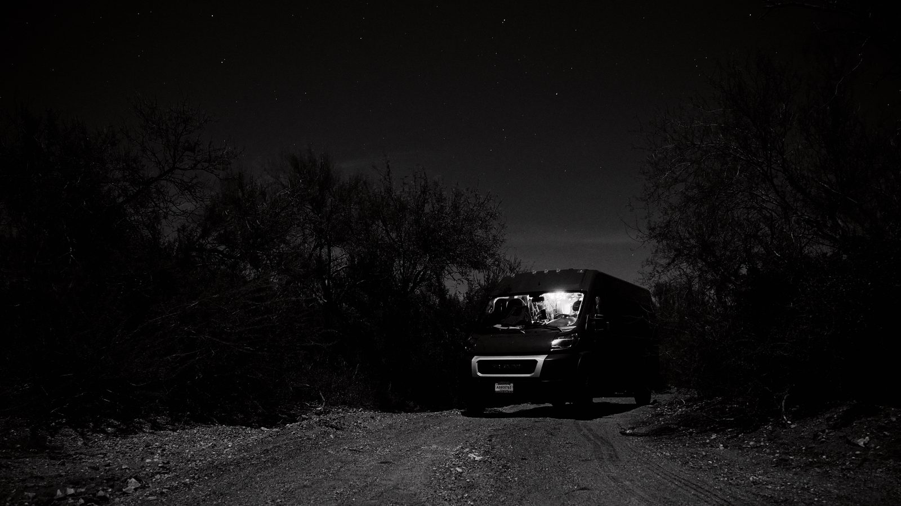

A van pulled off an unnamed dirt road. The engine stopped, the stars became louder, and the hum of the rest of the country finally disappeared. The frame that came out of that night did not feel cinematic in the moment. It felt quiet, practical, and earned.

We had been driving since noon. No destination in particular, no reservation, no clean endpoint, just the familiar agreement that we would stop when the road started to feel less useful than the dark around it.
When the headlights found the entrance to a dirt track, I turned without explaining it. That is one of the small efficiencies of being on the road long enough with the same person. Not every detour needs to be justified in advance. We drove just far enough in to disappear from the highway and stopped there.
The engine shut off and the silence changed shape. Not silence exactly. More like the removal of everything you had stopped noticing while driving: tire hiss, passing trucks, the low electrical whine of movement itself. The dog stirred once, checked that the situation was structurally sound, and went back to sleep.
Inside the van, a strip of warm LED light stayed on above the galley. Outside, the body of the van sat in black desert space like a lantern somebody had forgotten to carry home. It is easy to overstate these moments later, but in real time it felt mostly practical. We were tired. It was cold enough to notice. I wanted one frame before climbing back inside.
I set the tripod on uneven ground and started working through small adjustments. Fujifilm bodies are forgiving in situations like this if you let them stay simple: no heroic settings, no complicated exposure games, just enough patience to let the scene settle and enough discipline not to chase every possible variation.
The best thing about road photography is that the subject matter is often embarrassingly ordinary if you describe it badly. A parked van. A dark field. A few stars. But ordinary things become exacting under certain conditions, and that precision is what the camera is really for. Not novelty. Not spectacle. Attention.
I made maybe forty exposures. Most of them were not mistakes, exactly. They were only weaker versions of the same thought. The van too bright, the sky too dead, the foreground trying too hard to matter. Eventually one frame stopped asking for more help.
We slept there, woke up with dust on the lower panels and coffee on the stove, and were back on the road before the morning had fully decided what kind of day it was going to be. That is the part people usually leave out: even the most memorable stops still become morning very quickly.